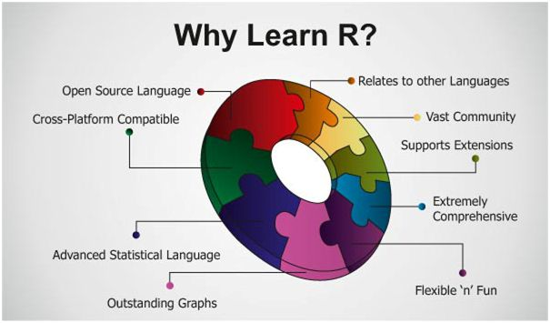

library(dplyr)
library(tidyr)
library(ggplot2)
library(lubridate)
library(trend)
library(extRemes)Data, Software, Setup and Libraries (Packages)
1 Get the Data Used
The data used in this practical are available in the GitHub repository associated with this project. We will be working with daily streamflow records from the “La Drôme à Luc-en-Diois” hydrometric station in France. The metadata of the station are available on the HydroPortail website (here). The dataset spans from August 1st, 1958, to December 31st, 2020, and will serve as the basis for exploring flood frequency analysis techniques.
2 R (environment) & Rstudio (IDE)
Note
An IDE (Integrated Development Environment) is a software application that provides developers with a comprehensive set of tools for writing, testing, and debugging code in one place.
2.1 🧠 What is R?
R is a programming language and software environment designed primarily for statistical computing, data analysis, and visualization.

2.2 🖥️ What is RStudio?
RStudio is an IDE (Integrated Development Environment) specifically made for working with R. It provides a much more convenient and powerful interface than the basic R console:
- 📝 Script editor with syntax highlighting and auto-completion
- 💻 Console for interactive execution
- 📦 Environment viewer to see your variables, functions, and data
- 📊 Plot viewer, 🗂️ file browser, 📖 help pane, and more
- ⚙️ Easy access to package management, 🔄 version control, and 📄
R Markdown / Quarto

2.3 🔧 How to use them together?
1- Install R → https://cran.r-project.org
2- Install RStudio → https://posit.co/download/rstudio-desktop/
3- Then, open RStudio → it will automatically use the installed R engine in the background.

3 Libraries (Packages)
Must-haves
Note
The packages dplyr, ggplot2 and lubridate are part of the tidyverse collection of R packages. The core tidyverse includes the packages that you’re likely to use in everyday data analyses. It’s is advised to install this set of packages, including dplyr, ggplot2 and lubridate, together by running:
install.packages("tidyverse")📦 {extRemes} — For fitting and analyzing extreme value distributions.
install.packages("extRemes")📦 {trend} — Provides non-parametric tests test for trend detection.
install.packages("trend")📦 {dplyr} — For data manipulation and tidy workflows
install.packages("dplyr")📦 {ggplot2} — For creating clear and publication-quality plots
install.packages("ggplot2")📦 {lubridate} — To work with date-times and time-spans.
install.packages("lubridate")